As a "Computer Science" person ("CSer") and someone who would like to continue learning in computer science in the future, this is probably the year of great growth and changes for myself. The width of my learnings greatly aggregated; the depth deepened; and much more projects I done is more related to my own life and people's needs.
In this webpage, I will briefly talk about my XA Artifact for Defense 2020: My Coding Experience this year. I will divide my experience into several sections by content/method of learning, along with various evidences, videos, image peaks, and webpage contents that are parts of my learning.
My learning can be briefly divided into 3 big parts: web development, other developments, and teaching/tutorials. I will give an overall introduction of what each part is about in this Introduction, and detailed subitems are shown below.
For the Web Development part, I engaged in different web application projects that connects to real life. For Other Developments, I continued what I did last year and started learning data science; for Teaching/Tutorial, which is one of my OKRs from the beginning, I actively shared what I possess to others.
My learning processes mostly exist in the form of BL, and a small part was done via learning in courses. My primary information sites are the documentation of the tool I am currently using, stackoverflow (an online coding forum), and CSDN.
Special Thanks to Jerry and Zhouzhou, for their lasting support on my learning and questions; to the participants of my workshop and classes, who gave wonderful feedbacks; to teammates of various projects, for working together.
Finally, All Related Tech Tags: Java C++ Spring Springboot Python Javascript+HTML+CSS Vue.js Iview UI Bootstrap MySQL Terminal Languages (Powershell, Bash) Git
Related Tech Tags: Java Spring Springboot Javascript+HTML+CSS Vue.js Iview UI MySQL
In the course Computer Science 2, I learned about Java, Spring, Springboot, AOP, OOP Principles, SQL + JPA, and more technologies. These seemingly terrifying names are targetting to build a website with a healthy database that stores the information of users as well as keeping track of all actions, a backend client that helps handling users' requests, and a frontend webpage which the user can view and facilitate their needs with an user interface.
Our final project in this course is to build a virtual "vending machine" website. Users can select their products, choose various discounts to spend less money, and buy their products. This website is connected to a database which holds the information of products and users' accounts.
A sneak peek to the user interface of my vending machine project:
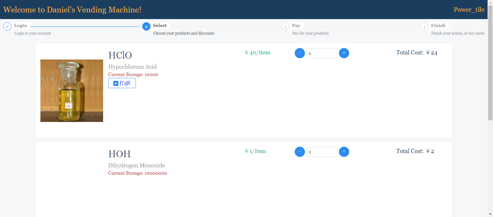 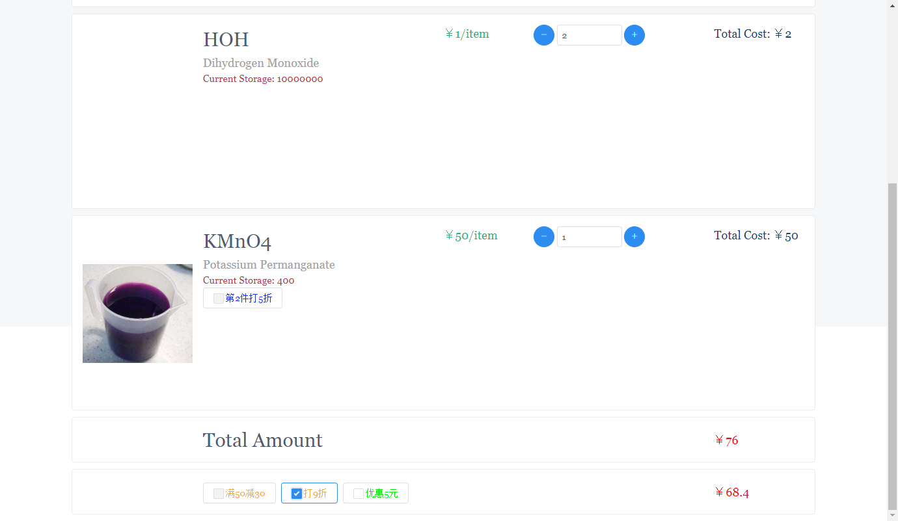P.S. This webpage needs to run on a server that provides the appropriate environment, and a special server needs to be rented for running the backend of this webpage. It is a pity that you cannot try the selection process by yourself.
If you want access to the full code: This project is open-source on Github. For the earliest console version without a frontend and database, click here; for the version with frontend and database, click here.
I also compiled various links which I found useful in the way:
Direct link is here.
Related Tech Tags: Node.js Python Django Javascript+HTML+CSS Vue.js Vuecli Iview UI Bootstrap MySQL
Dashboard is a platform for publishing school information and status of learners (for example, rate of attendance, competency level, learning evidences, milestone grades and comments), facing guardians (faculty members), learners, and parents. I engaged in both development processes for Dashboard 1 and Dashboard 2 in this year.
For Dashboard 1, I engaged in small-scale full stack development since March 2019. A screenshot from the old version of Dashboard 1:
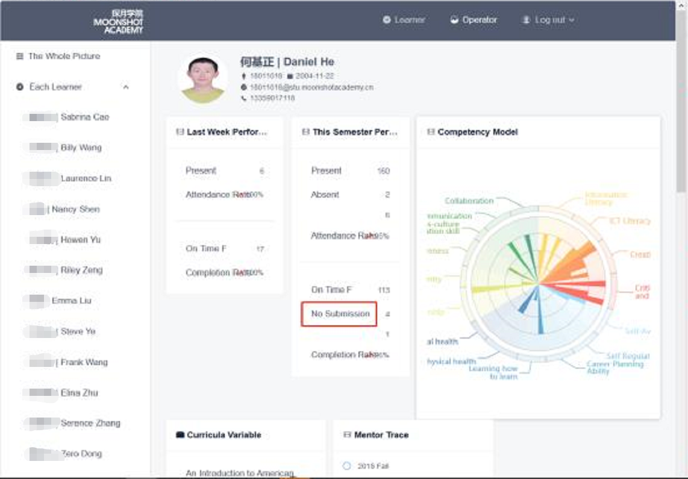P.S. This is the old version of dashboard and this screenshot is from an expired message in the dev group chat. Currently the newest data is hosted on Dashboard 2, and a screen capture of the current Dashboard 1 will be mostly blank (no data imported).
For Dashboard 2, I focused on frontend development and finished about 60% of the frontend page since the beginning
of the spring semester of 2020. In this process I also learned and used a new UI library called Bootstrap. A screenshot
of the current competency model page of dashboard 2 (I coded the competency evidence chart):
I also coded the defense grading application that defense panel members use:
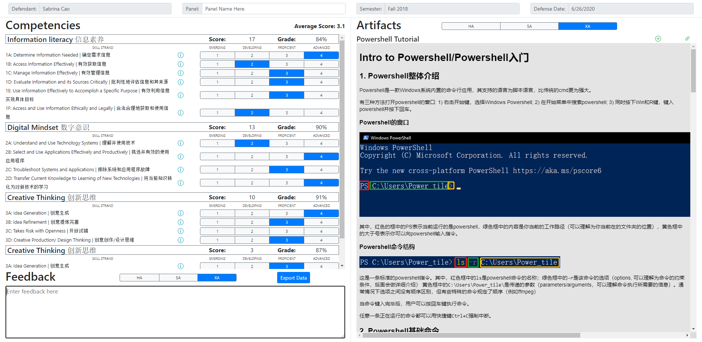Here, defense panel members can view the artifact provided by defendant, the requirements for each competencies, and project descriptions; grade competency by each skill strand; give feedback to each artifact; and export all data to a csv file. This application also supports saving data after closure of browser unexpectedly.
P.S. These repositories are private, so no links are available here.
Related Tech Tags: Java Spring Springboot Javascript+HTML+CSS Vue.js Iview UI MySQL
As the club leader of the SCP Makerspace Club, we decided to make a final project. After several discussions, we decide to make a physical vending machine, where learners and guardians can buy products and random boxes from. I am now leading the web group which aims to developing a phone webpage application that allows users to choose products online.
In this project, I focus more on tracking works and helping other learners by doing code review. A screenshot of our tower planner task:
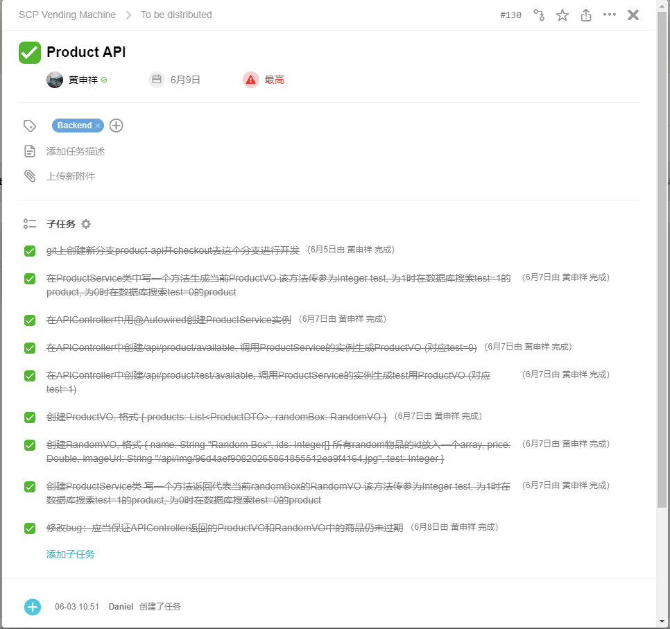A screenshot of a pull request, where we did code reviews:
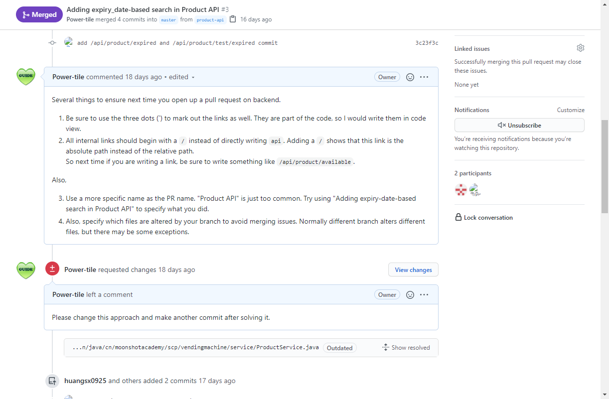This project is also open-sourced. For code observations, click here
Related Tech Tags: C++ Arduino
This is part of the IP Climate Mitigation project. For more information on this project or sensor rig, click here.
Frank and I was collaborating on coding the program for sensor rig. I know that Frank is quite clear about the actual code needed for controlling the sensors, and we covered all basic information needed to interpret a new arduino library in our SCP C++ Workshop (see below). However, he never collaborated coding with others before, and he is not very familiar with the algorithm used or the design of the sensor rig physical structure (which was done by me). Therefore, I decided to write the skeleton of the code, only declaring but not defining the control functions. A peak to the skeleton I wrote:
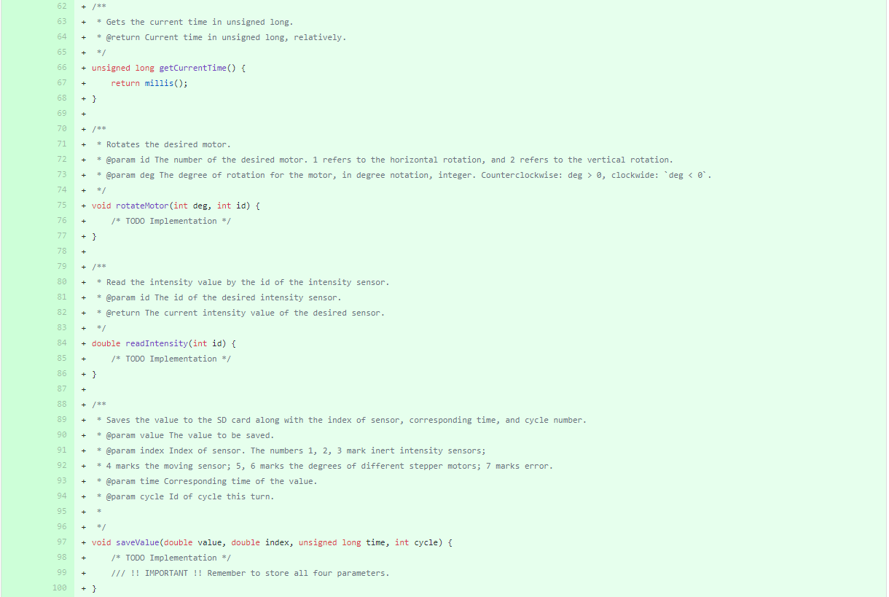I also did some code review with him, helping to point out the parts that needed alternation:
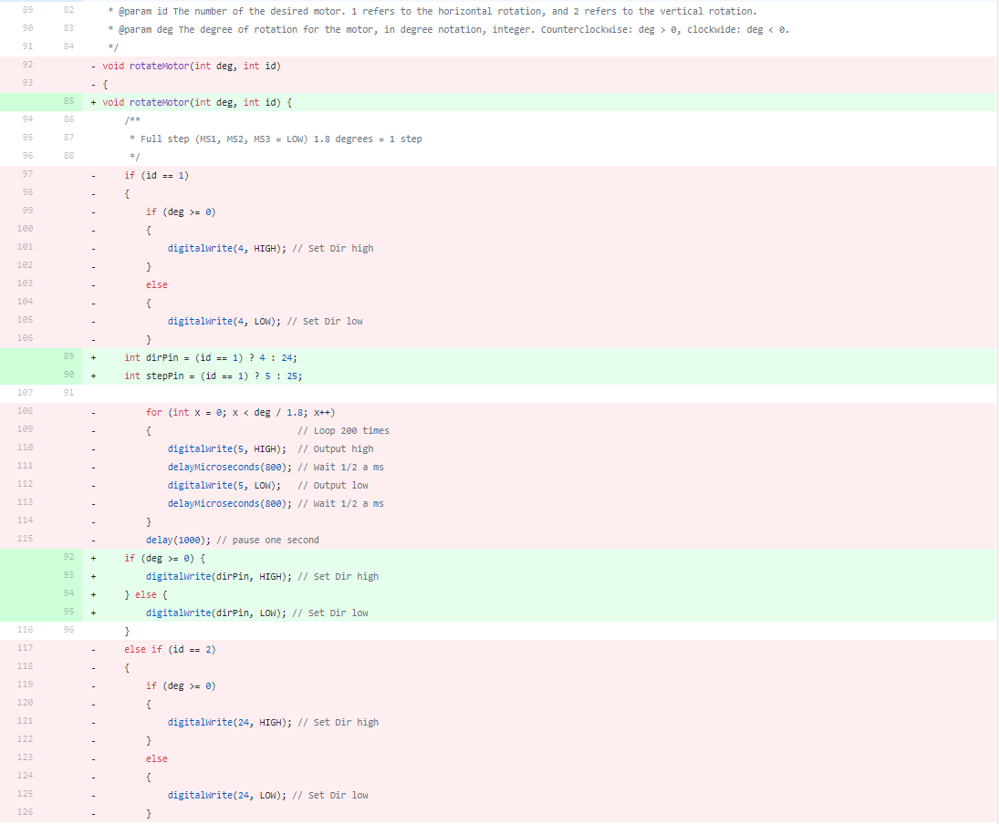These codes are also available on github: Sensor Rig Github Repo
Related Tech Tags: Python Jupyter Notebook numpy pandas matplotlib seaborn
In order to estimate the solar panel power generation, I used Python and several popular libraries (numpy,
pandas, etc.) to analyze the data from Google's project sunroof. Combined with data of solar radiation of Beijing,
I did a rough estimation on the power generation amount. Rough screenshot:
Related Tech Tags: Python Jupyter Notebook opencv
In this passing semester, I also learned more on computer graphics and computer vision, which I learned last summer as well. In my learning, I tried to take my notes in a new form: combining screenshots of slides, text interpretations, along with screen drawings together to achieve a more concise and reviewable note:
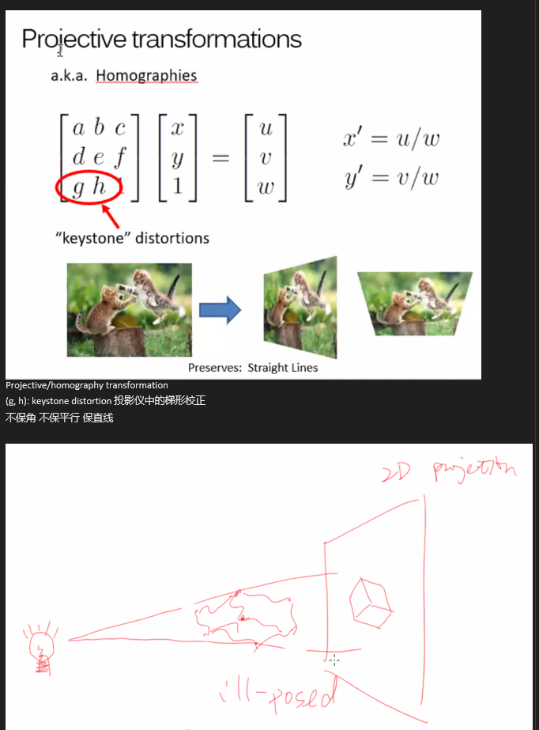As an engineerer, I often have the need of drawing engineering drafts. However, multiple drafts are often needed to show a complicated 3D physical structure, and direct modelling using modelling softwares are too tedious. Moreover, creating on top of existing scenes (for example, adding a new shelf into makerspace) includes lots of drawings of an existing scene.
In order to facilitate this problem, I decided to develop a "3D Sketching" tool aiming to sketch in three dimensional; 3D reconstruction based on 2D images; adding annotations and textures; etc.
Related Tech Tags: C++
In my spare time, I also continued solving problems on Luogu, an online judge website.
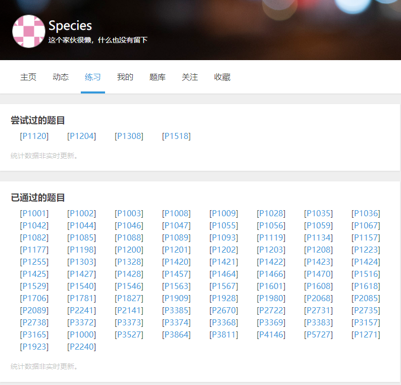Related Tech Tags: Java C++ Javascript+HTML+CSS Vue.js Iview UI MySQL Terminal Languages (Powershell/Bash) Git
I was the teacher assistant of COMP2001 class in the fall 2019 semester, and I was responsible for teaching part of the class, coding and projecting my computer when Jerry is teaching, writing answers for milestones, etc. The contents of the class are Terminal Languages, Javascript, and HTML+CSS.
For the first part of the class, we were teaching Terminal Languages, and we divided into two groups (Windows and Mac). I was in charge of the windows part of teaching, and I made a tutorial website covering the most important parts of the course:
Direct link is here.
The milestone answer I wrote for the course:
I opened up about 30 workshops on C++, and the total length of the workshops is about 20 hours. The workshops cover the basics of
C++ procedural grammar and data types; Arduino Programming and how to search + use a new sensor on the Internet; basic algorithms (DFS, BFS,
selection sort, quick sort); and intermediate grammar in C++ (struct, macros, vector, pointers, etc.).
Screenshot of classin record (we started using Classin after about 9 workshops):
Picture of me analyzing what we learned this semester in last workshop:
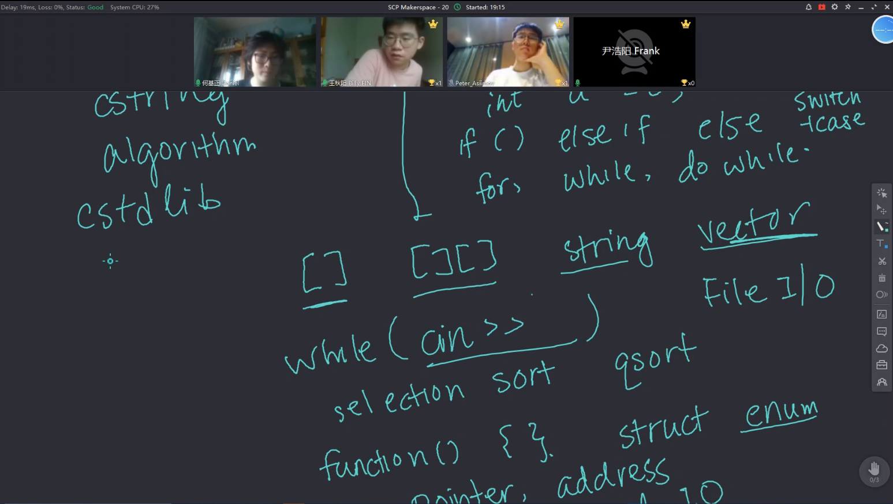The Matrix is a big sheet aiming for evaluating and linking evidence in different skills, and more. Here, I not only use the Matrix as a tool for evaluating myself, but also added new skills and challenges to the Matrix. I worked on the field of C++ briefly, and I will add more skills in the future. A screenshot to the skills I added to the matrix:
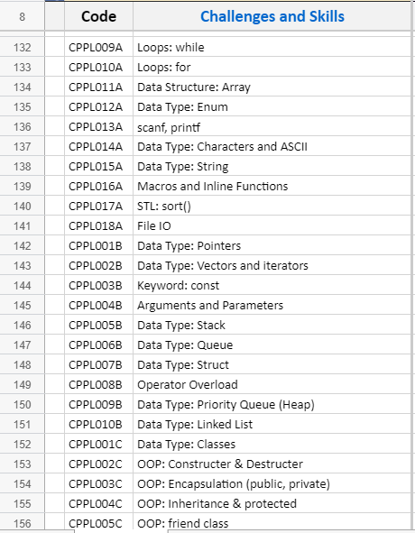Link to Makerspace Matrix here.
Developing in Vue.js and Iview UI, I found that both analyzing the code from an existing project and starting from scratch are not the best way of learning these (because of the vast knowledge points in both libraries). Therefore, I created a github project called "Vue Playground" and added a few challenges + code needed to interpret it. A challenge completed may look like this:
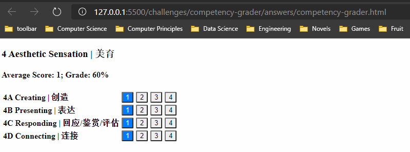Learners can try to achieve the challenge according to the Demo GIF, and check the answer code provided. These demos are often based on real needs from projects, so they can be easily migrated to other webpages as well.
Link to the Github Repository here.
This is perhaps the most vigorous year of my learning in computer science. Not only do I know more about this region and keep learning, I also feel that I am confident on "learning how to learn". Now I could use resources available much better, including listening to short classes on Tencent Course, asking questions on stackoverflow, opening issues on other's Github Repositories, and of course, asking for help from our guardians.
Throughout my learning, I am also more familiar with the differences between different languages and tools, as well as their meaning in the big picture. When a learner asked me why github was a word he often heard and see when browsing for coding contents on the Internet, I answered the question in three ways: function of Github, community in Github, and the spirit of collaboration. I could also summarize quickly the learning patterns of mine to those who are trying to learn it.
Another significant improvement is that I am creatively linking what I know to the problems in real world. The SCP Vending Machine, Dashboard, 3D Sketching tool, and sensor rig are all derived from real problems and needs I encountered in reality. Each of them had gone through a creative designing process. They went through the process of brainstorming, surveying, analyzing advantages and disadvantages, and countless iterations.
I also had many thoughts and experiences on making tutorials/teaching. From the start of my Moonshot Journey, one of my Objectives in my OKR is that "I want to share what I have and value to others". By opening up workshops, taking notes and create open-source challenges, make my projects public, sharing and compiling online resources, I realized "learning how to learn" doesn't necessary mean evaluating yourself, giving yourself feedback and reflect on your self, but also share boldly what you have to others.
One specific point I want to talk about in my teaching process is my ability of "linking". I always love linking different knowledge points together, and this is one of the reasons I love learning history and computer science. Through teaching and reflecting, I am able to link knowledge and spirit from the coding world into others things I like. For example, the question on the significance of Github not only helped me summarizing my own thoughts, but also inspired my Western Philosophy paper on ethics, where I talk about the negative sides of the Internet.
For many times, I resembled coding to writing poems, given that they are artifacts that follow certain rules, contain certain rhythms, and reflect on the author's thoughts and logic. Through my learning of computer science, I would say I gained more than just knowledge, but also reflections, warmth, learning how to learn, and thinking creatively.
In the future, I will continue my learning in web development, and also delve into the field of mobile development, game development, and other aspects. I will also pass on what I have learned to others. For my skills and competencies, I will continue exploring new ways of learning, searching for information, solving new problems, and create innovative projects.